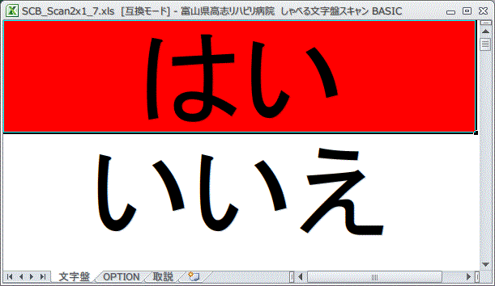

かならずお読みください →

しゃべる文字盤のつくりかた
2 WindowsとExcelとVBAとしゃべる文字盤

しゃべる文字盤は、エクセルのセルの色をすばやく変えて動いているように見せたり、音を出したり、文字を書いたり消したり、また文字や文を合成音声で読み上げたりしています。またスイッチの操作で動きを変えたり、電子メールやインターネットwebサイト閲覧もできます。
『どうしてエクセルが動いたりしゃべったりするんだ？』
細かい話に入る前に、ここではパソコンやエクセルなどしゃべる文字盤の基礎について説明をします。使う人（例えば患者さん）と見ている人（例えばご家族）にはあまり関係ないかもしれませんが、特になにか新しいことをしゃべる文字盤を使ってできるようにしようと考えている人には、しゃべる文字盤がどのように作られていて、どんな原理で動いているのかをぜひわかっていただきたいと思います。
現在世界で使用されているパソコンの9割近くがWindowsのパソコンと言われています。職場や家庭などみなさんの身の回りに見かける、富士通とかNECとかVAIOとかlenovoとかいろいろなマークをつけたパソコンがありますが、これらは全てWindowsパソコンです。一方アップル社のMacとかiPadは別の種類に属するパソコンです。またWindowsパソコンのほとんどにワープロソフトのワードと表計算ソフトのエクセルがインストールされていると言われています。
しゃべる文字盤はエクセルが入っているWindowsパソコンで、つまりよく見かけるほとんどのパソコンで使うことができます。しかし残念ながらすべてのパソコンで利用できるわけではありません。アップル社のパソコンではしゃべる文字盤は使えません。またWindowsパソコンでもエクセルが入っていないと使うことはできません。ただしこの場合、エクセルをインストールすれば使えるようになります。
エクセルを必要とするには理由があります。それはしゃべる文字盤はエクセルでつくられたソフトだからです。ワードが入っていないと、他の人が作ったワードのファイルが読めないのと同じ理由で、エクセルが入っていないとしゃべる文字盤はつかえないのです。 Windowsとエクセルについては後でさらにお話いたしますが、ここではしゃべる文字盤の一番目の特徴は、身近にある多くのパソコンで動かせ、使えることです。 この特徴はこれから説明するような場面で役に立ってきます。
前回、電話で伝の心の説明をするのに苦労した話を書きました。このように、コミュニケーションエイドを言葉や資料だけで説明するのは実は楽ではありません。またその説明を聞く患者さんやご家族にしても、目的やねらいはわかっても、実際にどんなものなのかなかなかイメージがつかめないことが多いようです。そんなときは、試しに少し使ってみましょうかという話になります。コミュニケーションエイドは使ってみないとわかりにくい道具なのです。
当院では、伝の心やレッツチャットを所有し、近隣の病院や施設に貸し出しもしています。またリハ工学のエンジニアもいますのでこのような話になっても何とかなります（何とかします）。 ところが、他の病院や施設ではすんなりいかないことが多いそうです。まず試しに使うコミュニケーションエイドの機械を準備すること、次に使い方を知っていて教える人を探すこと、最後にスイッチなどサポートする人を探すことといったことで苦労が多いようです。
実際、関西の大手福祉機器の会社もコミュニケーションエイドのレンタルを手がけており、また利用も多いようですが、レンタル期間をもっと長くとのご意見がよく寄せられるそうです。例えばご本人の体調悪化のためレンタル期間にほとんど何も出来ずしかたがないのでそのまま送り返した例もあるそうです。
つぎは教える人です。自分で説明書を読むのが難しい人に教えるには、事前に先生役の人がひと通りの操作をマスターする必要があります。これも限られた時間で準備するには難しい場合もあるかもしれません。
最後はサポートです。普通レンタルされる機械は標準的な構成ですが、お試しになる方によってはスイッチなど合わせる必要があるかもしれません。スイッチをあれこれ試しているうちにレンタル期間が過ぎるかもしれません。もしかして標準スイッチが使えないためにあきらめてしまうかもしれません。 こんな時に、身近にコミュニケーションエイド一式があって時間にゆとりを持って利用できると取り組む患者さんはずいぶん楽になります。また指導役の人が空いた時間で勉強する機会もふえます。費用が安ければ何台か保有できスケジュール調整も助かります。 これがしゃべる文字盤のねらいのひとつです。
現在ワープロは職場や学校そして家庭で文章作成に広く使われています。マイクロソフト社のワードはワープロのベストセラーです。同社の表計算ソフトがエクセルです。表計算ソフトは例えば会計など帳簿管理、学校の成績記録など多くの数字を扱う業務用に作られた、仕事を重視したソフトです。このためワープロに比べると一般にはあまり知られていません。 エクセルの仕事はグラフや表を作るだけではありません。数値処理や統計処理等、一般事務処理のため多くの機能を持っています。また、多数の帳票の計算処理を短時間で行うための自動計算機能、また多彩な事務処理に対応するため柔軟に機能を組み立てできる、マクロ言語（プログラム言語の一種）が入っています。これがしゃべる文字盤を動かしている原動力なのです。
表計算ソフト、エクセルには自動で計算する数式機能があります。この機能を使うことで、そのむかし手書き帳票と電卓（またはそろばん）で大勢が苦労してやっていた旧来の事務作業が自動化され瞬時に結果が表示されるようになりました。このほか繰り返しのやや多い一連の手操作の自動化は、マクロ言語を用いることで実現できます。 例えば、あるセルの背景色を白から赤に変更する作業について考えてみます。マウスやキーボードを使えば手作業でもこれはできます。２，３回なら手作業の方が早くすませることが多いでしょう。もし千回くりかえすならとても手作業では追いつきません。また正確に一秒間隔で繰り返す場合も手作業ではまず無理でしょう。 しかし、このような規則的な繰り返しの多い作業を自動化するためにマクロ言語が用意されています。この機能を使えば、一定時間で延々とセルの色を変更し続けるといったコミュニケーションエイドでよくみられる画面操作も実現できます。 エクセルのマクロ言語には、VBA（Visual Basic for Applications)というプログラミング言語が付属しています。これは表計算ソフト用にしてはかなり高機能で、音を出したり、キーボードやマウスの操作を検知したり、合成音声で発声できるのも、VBAの機能を利用しています。
『どうしてエクセルが動いたりしゃべったりするんだ？』
『エクセルのVBAで動かしたりしゃべらせたりしているからです。』
表計算ソフトエクセルをインストールしたら、知らないうちに非常にパワフルで取り扱いがやや面倒なVBAがおまけとしてついてきました。これは例えるなら、自動車を買ってトランクを開けたら中から戦車が出てきたようなものです。多くの人はこれを知りません。実際にしゃべる文字盤のファイルを開き、Alt＋f11キーを押下するとあなたのパソコンから見慣れない強力なやつが姿を現します。 多くの人は存在を知らない、気が付かない、しかしみなさんのパソコンの中にしっかり住みついているこいつの力を引き出して、何とか役に立つようにするのがしゃべる文字盤とこの一連の記事の目標なのです。
参考
Excel 歴史と機能 開発の歴史
http://ja.wikipedia.org/wiki/Microsoft_Excel
http://ja.wikipedia.org/wiki/Visual_Basic_for_Applications
2014/5/8 公開研究企画課リハ工学科にもどる